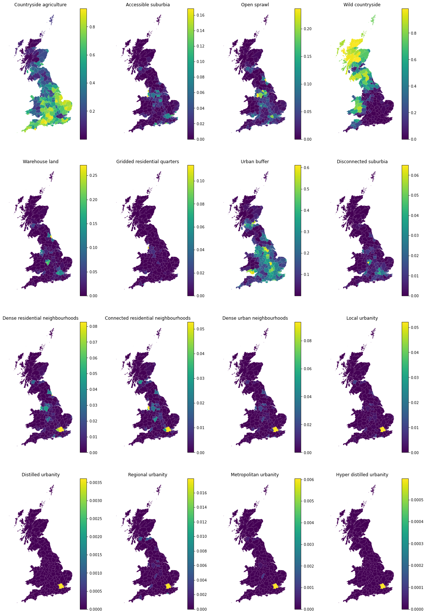
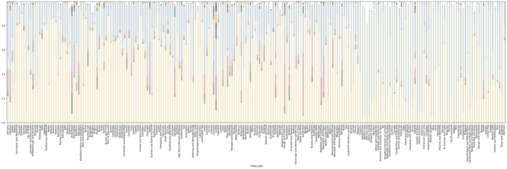
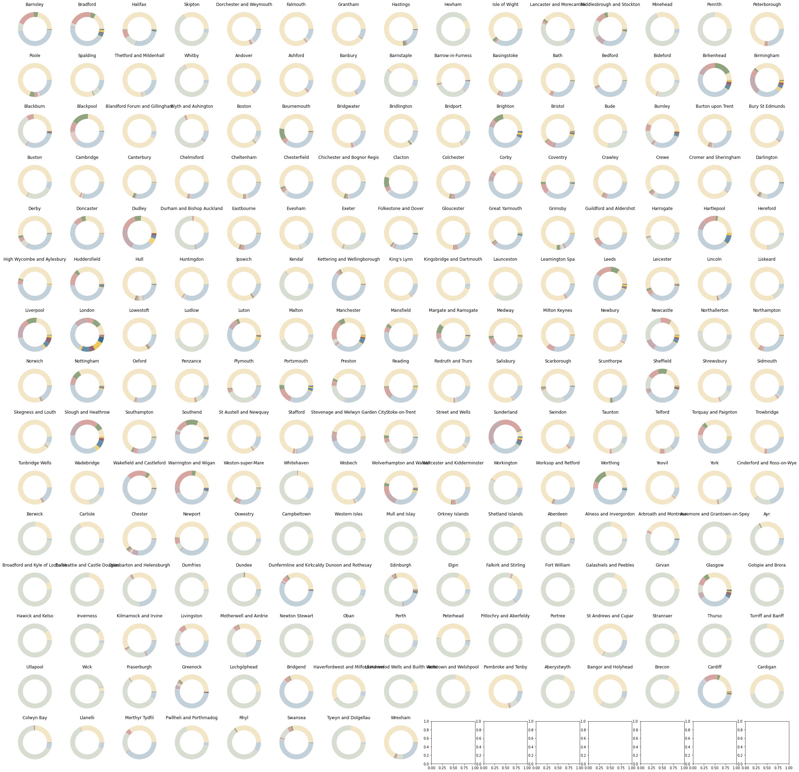
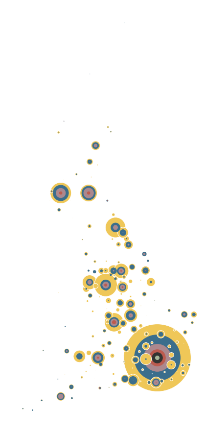
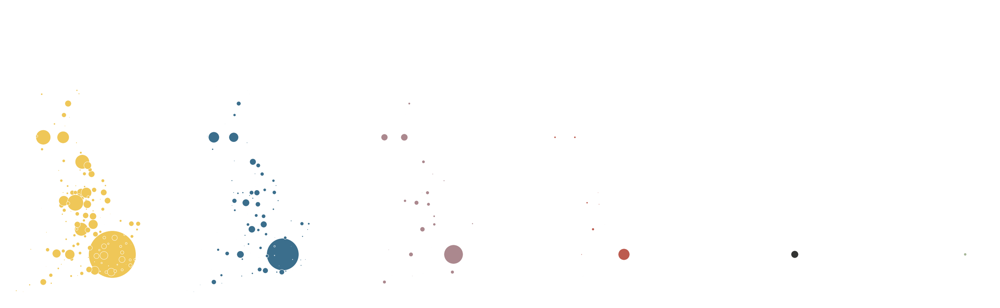

Composition of signatures within TTWA boundaries¶
import geopandas
import tobler
tobler.__version__
https://services1.arcgis.com/ESMARspQHYMw9BZ9/ArcGIS/rest/services/TTWA_2011_UK/FeatureServer
url = "https://services1.arcgis.com/ESMARspQHYMw9BZ9/arcgis/rest/services/TTWA_2011_UK/FeatureServer/0/query?where=1%3D1&objectIds=&time=&geometry=&geometryType=esriGeometryPolygon&inSR=&spatialRel=esriSpatialRelIntersects&resultType=none&distance=0.0&units=esriSRUnit_Meter&returnGeodetic=false&outFields=&returnGeometry=true&returnCentroid=false&featureEncoding=esriDefault&multipatchOption=xyFootprint&maxAllowableOffset=&geometryPrecision=&outSR=&datumTransformation=&applyVCSProjection=false&returnIdsOnly=false&returnUniqueIdsOnly=false&returnCountOnly=false&returnExtentOnly=false&returnQueryGeometry=false&returnDistinctValues=false&cacheHint=false&orderByFields=&groupByFieldsForStatistics=&outStatistics=&having=&resultOffset=&resultRecordCount=&returnZ=false&returnM=false&returnExceededLimitFeatures=true&quantizationParameters=&sqlFormat=none&f=pgeojson&token="
ttwa = geopandas.read_file(url)
ttwa
| TTWA11CD | geometry | |
|---|---|---|
| 0 | E30000004 | POLYGON ((-1.34865 53.58333, -1.32673 53.55813... |
| 1 | E30000018 | POLYGON ((-1.93086 53.95027, -1.89833 53.92398... |
| 2 | E30000029 | POLYGON ((-1.73679 53.70811, -1.73128 53.68037... |
| 3 | E30000039 | POLYGON ((-2.00451 54.17288, -1.99254 54.15528... |
| 4 | E30000046 | POLYGON ((-2.26489 50.75912, -2.24239 50.75563... |
| ... | ... | ... |
| 223 | W22000030 | MULTIPOLYGON (((-4.77992 52.76561, -4.80242 52... |
| 224 | W22000031 | POLYGON ((-3.14509 53.26082, -3.17735 53.24382... |
| 225 | W22000032 | POLYGON ((-3.47007 51.82850, -3.47633 51.80947... |
| 226 | W22000033 | POLYGON ((-3.48307 52.86552, -3.50541 52.84191... |
| 227 | W22000034 | POLYGON ((-2.72684 52.98327, -2.73532 52.97002... |
228 rows × 2 columns
# drop NI
ttwa = ttwa[~ttwa.TTWA11CD.str.startswith("N")]
ttwa.plot()
<AxesSubplot:>
ttwa.to_parquet("../../urbangrammar_samba/spatial_signatures/esda/ttwa.pq")
<ipython-input-30-01f59cdfba9b>:1: UserWarning: this is an initial implementation of Parquet/Feather file support and associated metadata. This is tracking version 0.1.0 of the metadata specification at https://github.com/geopandas/geo-arrow-spec
This metadata specification does not yet make stability promises. We do not yet recommend using this in a production setting unless you are able to rewrite your Parquet/Feather files.
To further ignore this warning, you can do:
import warnings; warnings.filterwarnings('ignore', message='.*initial implementation of Parquet.*')
ttwa.to_parquet("../../urbangrammar_samba/spatial_signatures/esda/ttwa.pq")
signatures = geopandas.read_parquet("../../urbangrammar_samba/spatial_signatures/signatures/signatures_combined_levels_simplified.pq")
types = {
"0_0": "Countryside agriculture",
"1_0": "Accessible suburbia",
"3_0": "Open sprawl",
"4_0": "Wild countryside",
"5_0": "Warehouse land",
"6_0": "Gridded residential quarters",
"7_0": "Urban buffer",
"8_0": "Disconnected suburbia",
"2_0": "Dense residential neighbourhoods",
"2_1": "Connected residential neighbourhoods",
"2_2": "Dense urban neighbourhoods",
"9_0": "Local urbanity",
"9_1": "Distilled urbanity",
"9_2": "Regional urbanity",
"9_4": "Metropolitan urbanity",
"9_5": "Hyper distilled urbanity",
}
signatures["signature_type"] = signatures["signature_type"].map(types)
signatures = signatures[["signature_type", "geometry"]].dropna()
signatures
| signature_type | geometry | |
|---|---|---|
| 0 | Countryside agriculture | POLYGON ((62219.999 798499.999, 62109.999 7985... |
| 1 | Countryside agriculture | POLYGON ((63507.682 796515.168, 63471.096 7965... |
| 2 | Countryside agriculture | POLYGON ((65953.174 802246.171, 65523.864 8023... |
| 3 | Countryside agriculture | POLYGON ((67297.740 803435.799, 67220.290 8034... |
| 4 | Countryside agriculture | POLYGON ((75760.000 852669.999, 75699.999 8527... |
| ... | ... | ... |
| 96687 | Hyper distilled urbanity | POLYGON ((528602.733 181135.451, 528572.629 18... |
| 96688 | Hyper distilled urbanity | POLYGON ((528643.907 181217.443, 528632.000 18... |
| 96689 | Hyper distilled urbanity | POLYGON ((528734.583 181316.821, 528722.252 18... |
| 96690 | Hyper distilled urbanity | POLYGON ((530336.433 181039.754, 530301.430 18... |
| 96691 | Hyper distilled urbanity | POLYGON ((581275.000 184964.001, 581431.000 18... |
96689 rows × 2 columns
%%time
interpolated = tobler.area_weighted.area_interpolate(signatures, ttwa.to_crs(signatures.crs), categorical_variables=["signature_type"], n_jobs=-1)
CPU times: user 5.54 s, sys: 336 ms, total: 5.88 s
Wall time: 56.1 s
interpolated.columns = [c[15:] for c in interpolated.columns]
interpolated["TTWA11CD"] = ttwa.TTWA11CD.values
interpolated
| Countryside agriculture | Accessible suburbia | Open sprawl | Wild countryside | Warehouse land | Gridded residential quarters | Urban buffer | Disconnected suburbia | Dense residential neighbourhoods | Connected residential neighbourhoods | Dense urban neighbourhoods | Local urbanity | Distilled urbanity | Regional urbanity | Metropolitan urbanity | Hyper distilled urbanity | TTWA11CD | ||
|---|---|---|---|---|---|---|---|---|---|---|---|---|---|---|---|---|---|---|
| 0 | 0.218571 | 0.043969 | 0.176920 | 0.079282 | 1.235609e-03 | 0.000215 | 0.467117 | 0.003725 | 0.006016 | 7.620440e-04 | 0.002179 | 0.000008 | 0.0 | 0.000000 | 0.00000 | 0.0 | POLYGON ((443219.518 409835.037, 444696.854 40... | E30000004 |
| 1 | 0.166363 | 0.045175 | 0.229543 | 0.030462 | 8.473206e-03 | 0.002243 | 0.431080 | 0.008993 | 0.032779 | 1.287391e-02 | 0.023451 | 0.008330 | 0.0 | 0.000230 | 0.00000 | 0.0 | POLYGON ((404635.122 450465.360, 406774.289 44... | E30000018 |
| 2 | 0.504775 | 0.008234 | 0.078947 | 0.115431 | 7.741750e-03 | 0.000413 | 0.254977 | 0.004334 | 0.018119 | 1.105400e-03 | 0.005319 | 0.000605 | 0.0 | 0.000000 | 0.00000 | 0.0 | POLYGON ((417471.523 423552.896, 417846.958 42... | E30000029 |
| 3 | 0.333012 | 0.000010 | 0.002617 | 0.626129 | 6.710558e-04 | 0.000000 | 0.036716 | 0.000069 | 0.000567 | 4.414055e-07 | 0.000182 | 0.000000 | 0.0 | 0.000000 | 0.00000 | 0.0 | POLYGON ((399803.434 475232.566, 400584.619 47... | E30000039 |
| 4 | 0.802061 | 0.003388 | 0.021588 | 0.029028 | 4.503935e-03 | 0.000505 | 0.122362 | 0.000286 | 0.004367 | 4.048234e-04 | 0.000823 | 0.000234 | 0.0 | 0.000074 | 0.00004 | 0.0 | POLYGON ((381412.611 95536.380, 382998.301 951... | E30000046 |
| ... | ... | ... | ... | ... | ... | ... | ... | ... | ... | ... | ... | ... | ... | ... | ... | ... | ... | ... |
| 213 | 0.293667 | 0.000214 | 0.000676 | 0.634816 | 1.737027e-05 | 0.000003 | 0.031056 | 0.000000 | 0.000197 | 1.286061e-05 | 0.000000 | 0.000000 | 0.0 | 0.000000 | 0.00000 | 0.0 | MULTIPOLYGON (((212541.096 322292.766, 210936.... | W22000030 |
| 214 | 0.336676 | 0.009619 | 0.006018 | 0.554385 | 3.207763e-04 | 0.000965 | 0.089908 | 0.000154 | 0.000000 | 2.772906e-04 | 0.000000 | 0.000000 | 0.0 | 0.000000 | 0.00000 | 0.0 | POLYGON ((323712.675 374369.204, 321530.068 37... | W22000031 |
| 215 | 0.284508 | 0.017178 | 0.035579 | 0.107998 | 1.688731e-02 | 0.007048 | 0.512841 | 0.001141 | 0.003019 | 1.465991e-03 | 0.001280 | 0.000994 | 0.0 | 0.000110 | 0.00000 | 0.0 | POLYGON ((298789.856 215454.183, 298315.838 21... | W22000032 |
| 216 | 0.226124 | 0.000061 | 0.000709 | 0.750838 | 8.901256e-07 | 0.000000 | 0.016346 | 0.000098 | 0.000000 | 0.000000e+00 | 0.000000 | 0.000000 | 0.0 | 0.000000 | 0.00000 | 0.0 | POLYGON ((300258.629 330812.406, 298700.069 32... | W22000033 |
| 217 | 0.679714 | 0.008352 | 0.019098 | 0.066124 | 3.936716e-03 | 0.000004 | 0.216473 | 0.002296 | 0.002831 | 4.258767e-04 | 0.000747 | 0.000000 | 0.0 | 0.000000 | 0.00000 | 0.0 | POLYGON ((351298.707 343128.550, 350714.368 34... | W22000034 |
218 rows × 18 columns
import pandas
names = pandas.read_csv("https://opendata.arcgis.com/api/v3/datasets/9ac894d3086641bebcbfa9960895db39_0/downloads/data?format=csv&spatialRefId=4326")
names
| TTWA11CD | TTWA11NM | FID | |
|---|---|---|---|
| 0 | E30000004 | Barnsley | 1 |
| 1 | S22000048 | Alness and Invergordon | 2 |
| 2 | E30000018 | Bradford | 3 |
| 3 | E30000029 | Halifax | 4 |
| 4 | E30000039 | Skipton | 5 |
| ... | ... | ... | ... |
| 223 | S22000013 | Western Isles | 224 |
| 224 | S22000032 | Mull and Islay | 225 |
| 225 | S22000035 | Orkney Islands | 226 |
| 226 | S22000039 | Shetland Islands | 227 |
| 227 | S22000047 | Aberdeen | 228 |
228 rows × 3 columns
names.to_parquet("../../urbangrammar_samba/spatial_signatures/esda/ttwa_names.pq")
interpolated = interpolated.merge(names[["TTWA11CD", "TTWA11NM"]], on="TTWA11CD", how="left")
interpolated
| Countryside agriculture | Accessible suburbia | Open sprawl | Wild countryside | Warehouse land | Gridded residential quarters | Urban buffer | Disconnected suburbia | Dense residential neighbourhoods | Connected residential neighbourhoods | Dense urban neighbourhoods | Local urbanity | Distilled urbanity | Regional urbanity | Metropolitan urbanity | Hyper distilled urbanity | TTWA11CD | TTWA11NM | ||
|---|---|---|---|---|---|---|---|---|---|---|---|---|---|---|---|---|---|---|---|
| 0 | 0.218571 | 0.043969 | 0.176920 | 0.079282 | 1.235609e-03 | 0.000215 | 0.467117 | 0.003725 | 0.006016 | 7.620440e-04 | 0.002179 | 0.000008 | 0.0 | 0.000000 | 0.00000 | 0.0 | POLYGON ((443219.518 409835.037, 444696.854 40... | E30000004 | Barnsley |
| 1 | 0.166363 | 0.045175 | 0.229543 | 0.030462 | 8.473206e-03 | 0.002243 | 0.431080 | 0.008993 | 0.032779 | 1.287391e-02 | 0.023451 | 0.008330 | 0.0 | 0.000230 | 0.00000 | 0.0 | POLYGON ((404635.122 450465.360, 406774.289 44... | E30000018 | Bradford |
| 2 | 0.504775 | 0.008234 | 0.078947 | 0.115431 | 7.741750e-03 | 0.000413 | 0.254977 | 0.004334 | 0.018119 | 1.105400e-03 | 0.005319 | 0.000605 | 0.0 | 0.000000 | 0.00000 | 0.0 | POLYGON ((417471.523 423552.896, 417846.958 42... | E30000029 | Halifax |
| 3 | 0.333012 | 0.000010 | 0.002617 | 0.626129 | 6.710558e-04 | 0.000000 | 0.036716 | 0.000069 | 0.000567 | 4.414055e-07 | 0.000182 | 0.000000 | 0.0 | 0.000000 | 0.00000 | 0.0 | POLYGON ((399803.434 475232.566, 400584.619 47... | E30000039 | Skipton |
| 4 | 0.802061 | 0.003388 | 0.021588 | 0.029028 | 4.503935e-03 | 0.000505 | 0.122362 | 0.000286 | 0.004367 | 4.048234e-04 | 0.000823 | 0.000234 | 0.0 | 0.000074 | 0.00004 | 0.0 | POLYGON ((381412.611 95536.380, 382998.301 951... | E30000046 | Dorchester and Weymouth |
| ... | ... | ... | ... | ... | ... | ... | ... | ... | ... | ... | ... | ... | ... | ... | ... | ... | ... | ... | ... |
| 213 | 0.293667 | 0.000214 | 0.000676 | 0.634816 | 1.737027e-05 | 0.000003 | 0.031056 | 0.000000 | 0.000197 | 1.286061e-05 | 0.000000 | 0.000000 | 0.0 | 0.000000 | 0.00000 | 0.0 | MULTIPOLYGON (((212541.096 322292.766, 210936.... | W22000030 | Pwllheli and Porthmadog |
| 214 | 0.336676 | 0.009619 | 0.006018 | 0.554385 | 3.207763e-04 | 0.000965 | 0.089908 | 0.000154 | 0.000000 | 2.772906e-04 | 0.000000 | 0.000000 | 0.0 | 0.000000 | 0.00000 | 0.0 | POLYGON ((323712.675 374369.204, 321530.068 37... | W22000031 | Rhyl |
| 215 | 0.284508 | 0.017178 | 0.035579 | 0.107998 | 1.688731e-02 | 0.007048 | 0.512841 | 0.001141 | 0.003019 | 1.465991e-03 | 0.001280 | 0.000994 | 0.0 | 0.000110 | 0.00000 | 0.0 | POLYGON ((298789.856 215454.183, 298315.838 21... | W22000032 | Swansea |
| 216 | 0.226124 | 0.000061 | 0.000709 | 0.750838 | 8.901256e-07 | 0.000000 | 0.016346 | 0.000098 | 0.000000 | 0.000000e+00 | 0.000000 | 0.000000 | 0.0 | 0.000000 | 0.00000 | 0.0 | POLYGON ((300258.629 330812.406, 298700.069 32... | W22000033 | Tywyn and Dolgellau |
| 217 | 0.679714 | 0.008352 | 0.019098 | 0.066124 | 3.936716e-03 | 0.000004 | 0.216473 | 0.002296 | 0.002831 | 4.258767e-04 | 0.000747 | 0.000000 | 0.0 | 0.000000 | 0.00000 | 0.0 | POLYGON ((351298.707 343128.550, 350714.368 34... | W22000034 | Wrexham |
218 rows × 19 columns
interpolated.columns = ['Countryside agriculture', 'Accessible suburbia', 'Open sprawl',
'Wild countryside', 'Warehouse land', 'Gridded residential quarters',
'Urban buffer', 'Disconnected suburbia',
'Dense residential neighbourhoods',
'Connected residential neighbourhoods', 'Dense urban neighbourhoods',
'Local urbanity', 'Distilled urbanity', 'Regional urbanity',
'Metropolitan urbanity', 'Hyper distilled urbanity', 'geometry', 'TTWA11CD',
'TTWA11NM']
interpolated = geopandas.GeoDataFrame(interpolated, crs=27700)
interpolated.to_parquet("../../urbangrammar_samba/spatial_signatures/esda/ttwa_interpolated.pq")
<ipython-input-29-0c6f61fce238>:1: UserWarning: this is an initial implementation of Parquet/Feather file support and associated metadata. This is tracking version 0.1.0 of the metadata specification at https://github.com/geopandas/geo-arrow-spec
This metadata specification does not yet make stability promises. We do not yet recommend using this in a production setting unless you are able to rewrite your Parquet/Feather files.
To further ignore this warning, you can do:
import warnings; warnings.filterwarnings('ignore', message='.*initial implementation of Parquet.*')
geopandas.GeoDataFrame(interpolated, crs=27700).to_parquet("../../urbangrammar_samba/spatial_signatures/esda/ttwa_interpolated.pq")
pip install squarify
Collecting squarify
Downloading squarify-0.4.3-py3-none-any.whl (4.3 kB)
Installing collected packages: squarify
Successfully installed squarify-0.4.3
Note: you may need to restart the kernel to use updated packages.
import matplotlib.pyplot as plt
# import squarify
import urbangrammar_graphics as ugg
plot_data = interpolated.set_index("TTWA11NM").T.drop(["geometry", "TTWA11CD"])
plot_data
| TTWA11NM | Barnsley | Bradford | Halifax | Skipton | Dorchester and Weymouth | Falmouth | Grantham | Hastings | Hexham | Isle of Wight | ... | Cardiff | Cardigan | Colwyn Bay | Llanelli | Merthyr Tydfil | Pwllheli and Porthmadog | Rhyl | Swansea | Tywyn and Dolgellau | Wrexham |
|---|---|---|---|---|---|---|---|---|---|---|---|---|---|---|---|---|---|---|---|---|---|
| Countryside agriculture | 0.218571 | 0.166363 | 0.504775 | 0.333012 | 0.802061 | 0.814348 | 0.895776 | 0.760641 | 0.094955 | 0.597957 | ... | 0.195072 | 0.52362 | 0.247824 | 0.31493 | 0.354032 | 0.293667 | 0.336676 | 0.284508 | 0.226124 | 0.679714 |
| Accessible suburbia | 0.043969 | 0.045175 | 0.008234 | 0.00001 | 0.003388 | 0.001462 | 0.003265 | 0.029552 | 0.0 | 0.02578 | ... | 0.026886 | 0.0 | 0.008341 | 0.000882 | 0.001534 | 0.000214 | 0.009619 | 0.017178 | 0.000061 | 0.008352 |
| Open sprawl | 0.17692 | 0.229543 | 0.078947 | 0.002617 | 0.021588 | 0.014442 | 0.008393 | 0.015345 | 0.000812 | 0.019786 | ... | 0.104492 | 0.000554 | 0.006211 | 0.004573 | 0.043843 | 0.000676 | 0.006018 | 0.035579 | 0.000709 | 0.019098 |
| Wild countryside | 0.079282 | 0.030462 | 0.115431 | 0.626129 | 0.029028 | 0.026181 | 0.00005 | 0.000017 | 0.897122 | 0.000098 | ... | 0.0 | 0.459751 | 0.668945 | 0.613634 | 0.201801 | 0.634816 | 0.554385 | 0.107998 | 0.750838 | 0.066124 |
| Warehouse land | 0.001236 | 0.008473 | 0.007742 | 0.000671 | 0.004504 | 0.000552 | 0.000426 | 0.000163 | 0.000008 | 0.000908 | ... | 0.034154 | 0.000037 | 0.002057 | 0.000003 | 0.009063 | 0.000017 | 0.000321 | 0.016887 | 0.000001 | 0.003937 |
| Gridded residential quarters | 0.000215 | 0.002243 | 0.000413 | 0.0 | 0.000505 | 0.003124 | 0.000075 | 0.0 | 0.0 | 0.006856 | ... | 0.018411 | 0.0 | 0.0008 | 0.001571 | 0.002301 | 0.000003 | 0.000965 | 0.007048 | 0.0 | 0.000004 |
| Urban buffer | 0.467117 | 0.43108 | 0.254977 | 0.036716 | 0.122362 | 0.094889 | 0.09007 | 0.165469 | 0.007009 | 0.325959 | ... | 0.577927 | 0.007025 | 0.05864 | 0.059869 | 0.385135 | 0.031056 | 0.089908 | 0.512841 | 0.016346 | 0.216473 |
| Disconnected suburbia | 0.003725 | 0.008993 | 0.004334 | 0.000069 | 0.000286 | 0.002359 | 0.000676 | 0.003295 | 0.00001 | 0.000196 | ... | 0.007809 | 0.000003 | 0.000006 | 0.000143 | 0.00054 | 0.0 | 0.000154 | 0.001141 | 0.000098 | 0.002296 |
| Dense residential neighbourhoods | 0.006016 | 0.032779 | 0.018119 | 0.000567 | 0.004367 | 0.000202 | 0.001139 | 0.005219 | 0.000085 | 0.003164 | ... | 0.008218 | 0.0 | 0.000323 | 0.000008 | 0.000775 | 0.000197 | 0.0 | 0.003019 | 0.0 | 0.002831 |
| Connected residential neighbourhoods | 0.000762 | 0.012874 | 0.001105 | 0.0 | 0.000405 | 0.001662 | 0.000002 | 0.00368 | 0.0 | 0.000155 | ... | 0.008751 | 0.0 | 0.002724 | 0.000003 | 0.000977 | 0.000013 | 0.000277 | 0.001466 | 0.0 | 0.000426 |
| Dense urban neighbourhoods | 0.002179 | 0.023451 | 0.005319 | 0.000182 | 0.000823 | 0.0 | 0.000129 | 0.001775 | 0.0 | 0.0 | ... | 0.011502 | 0.0 | 0.000005 | 0.0 | 0.0 | 0.0 | 0.0 | 0.00128 | 0.0 | 0.000747 |
| Local urbanity | 0.000008 | 0.00833 | 0.000605 | 0.0 | 0.000234 | 0.000201 | 0.0 | 0.000069 | 0.0 | 0.0 | ... | 0.003291 | 0.0 | 0.0 | 0.0 | 0.0 | 0.0 | 0.0 | 0.000994 | 0.0 | 0.0 |
| Distilled urbanity | 0.0 | 0.0 | 0.0 | 0.0 | 0.0 | 0.0 | 0.0 | 0.0 | 0.0 | 0.0 | ... | 0.0 | 0.0 | 0.0 | 0.0 | 0.0 | 0.0 | 0.0 | 0.0 | 0.0 | 0.0 |
| Regional urbanity | 0.0 | 0.00023 | 0.0 | 0.0 | 0.000074 | 0.0 | 0.0 | 0.0 | 0.0 | 0.0 | ... | 0.0 | 0.0 | 0.0 | 0.0 | 0.0 | 0.0 | 0.0 | 0.00011 | 0.0 | 0.0 |
| Metropolitan urbanity | 0.0 | 0.0 | 0.0 | 0.0 | 0.00004 | 0.0 | 0.0 | 0.0 | 0.0 | 0.0 | ... | 0.0 | 0.0 | 0.0 | 0.0 | 0.0 | 0.0 | 0.0 | 0.0 | 0.0 | 0.0 |
| Hyper distilled urbanity | 0.0 | 0.0 | 0.0 | 0.0 | 0.0 | 0.0 | 0.0 | 0.0 | 0.0 | 0.0 | ... | 0.0 | 0.0 | 0.0 | 0.0 | 0.0 | 0.0 | 0.0 | 0.0 | 0.0 | 0.0 |
16 rows × 218 columns
cmap = ugg.get_colormap(20, randomize=False)
cols = cmap.colors
symbology = {'0_0': cols[16],
'1_0': cols[15],
'3_0': cols[9],
'4_0': cols[12],
'5_0': cols[21],
'6_0': cols[8],
'7_0': cols[4],
'8_0': cols[18],
'2_0': cols[6],
'2_1': cols[23],
'2_2': cols[19],
'9_0': cols[7],
'9_1': cols[3],
'9_2': cols[22],
'9_4': cols[11],
'9_5': cols[14],
}
symbology = {types[k]:v for k, v in symbology.items()}
for place in plot_data.columns:
fig, ax = plt.subplots(figsize=(12, 12))
squarify.plot(sizes=plot_data[place] + 0.00000001, pad=True, ax=ax, color=list(symbology.values()))
ax.axis('off')
plt.savefig(f"../../urbangrammar_samba/spatial_signatures/esda/ttwa_treemaps/{place}.pdf")
plt.close()
plot_data.T["Wild countryside"].sort_values(ascending=False).iloc[:50].plot.bar(figsize=(18, 7))
<AxesSubplot:xlabel='TTWA11NM'>
for sig in plot_data.index:
ax = interpolated.plot(sig, figsize=(15, 15), legend=True)
ax.axis('off')
plt.savefig(f"../../urbangrammar_samba/spatial_signatures/esda/ttwa_maps/{sig}.png")
plt.close()
fig, axs = plt.subplots(4, 4, figsize=(20, 30))
axs = axs.flatten()
for i, sig in enumerate(plot_data.index):
interpolated.plot(sig, ax=axs[i], legend=True)
axs[i].axis("off")
axs[i].set_title(sig)

ax = plot_data.T.plot.bar(color=list(symbology.values()), stacked=True, figsize=(40, 10), legend=False)

ax = plot_data["Barnsley"].plot.pie(colors=list(symbology.values()), labels=None, normalize=True)
ax.add_artist(plt.Circle((0,0), .7, color="w"))
<matplotlib.patches.Circle at 0x7f833ee4fc10>
plot_data
| TTWA11NM | Barnsley | Bradford | Halifax | Skipton | Dorchester and Weymouth | Falmouth | Grantham | Hastings | Hexham | Isle of Wight | ... | Cardiff | Cardigan | Colwyn Bay | Llanelli | Merthyr Tydfil | Pwllheli and Porthmadog | Rhyl | Swansea | Tywyn and Dolgellau | Wrexham |
|---|---|---|---|---|---|---|---|---|---|---|---|---|---|---|---|---|---|---|---|---|---|
| Countryside agriculture | 0.218571 | 0.166363 | 0.504775 | 0.333012 | 0.802061 | 0.814348 | 0.895776 | 0.760641 | 0.094955 | 0.597957 | ... | 0.195072 | 0.52362 | 0.247824 | 0.31493 | 0.354032 | 0.293667 | 0.336676 | 0.284508 | 0.226124 | 0.679714 |
| Accessible suburbia | 0.043969 | 0.045175 | 0.008234 | 0.00001 | 0.003388 | 0.001462 | 0.003265 | 0.029552 | 0.0 | 0.02578 | ... | 0.026886 | 0.0 | 0.008341 | 0.000882 | 0.001534 | 0.000214 | 0.009619 | 0.017178 | 0.000061 | 0.008352 |
| Open sprawl | 0.17692 | 0.229543 | 0.078947 | 0.002617 | 0.021588 | 0.014442 | 0.008393 | 0.015345 | 0.000812 | 0.019786 | ... | 0.104492 | 0.000554 | 0.006211 | 0.004573 | 0.043843 | 0.000676 | 0.006018 | 0.035579 | 0.000709 | 0.019098 |
| Wild countryside | 0.079282 | 0.030462 | 0.115431 | 0.626129 | 0.029028 | 0.026181 | 0.00005 | 0.000017 | 0.897122 | 0.000098 | ... | 0.0 | 0.459751 | 0.668945 | 0.613634 | 0.201801 | 0.634816 | 0.554385 | 0.107998 | 0.750838 | 0.066124 |
| Warehouse land | 0.001236 | 0.008473 | 0.007742 | 0.000671 | 0.004504 | 0.000552 | 0.000426 | 0.000163 | 0.000008 | 0.000908 | ... | 0.034154 | 0.000037 | 0.002057 | 0.000003 | 0.009063 | 0.000017 | 0.000321 | 0.016887 | 0.000001 | 0.003937 |
| Gridded residential quarters | 0.000215 | 0.002243 | 0.000413 | 0.0 | 0.000505 | 0.003124 | 0.000075 | 0.0 | 0.0 | 0.006856 | ... | 0.018411 | 0.0 | 0.0008 | 0.001571 | 0.002301 | 0.000003 | 0.000965 | 0.007048 | 0.0 | 0.000004 |
| Urban buffer | 0.467117 | 0.43108 | 0.254977 | 0.036716 | 0.122362 | 0.094889 | 0.09007 | 0.165469 | 0.007009 | 0.325959 | ... | 0.577927 | 0.007025 | 0.05864 | 0.059869 | 0.385135 | 0.031056 | 0.089908 | 0.512841 | 0.016346 | 0.216473 |
| Disconnected suburbia | 0.003725 | 0.008993 | 0.004334 | 0.000069 | 0.000286 | 0.002359 | 0.000676 | 0.003295 | 0.00001 | 0.000196 | ... | 0.007809 | 0.000003 | 0.000006 | 0.000143 | 0.00054 | 0.0 | 0.000154 | 0.001141 | 0.000098 | 0.002296 |
| Dense residential neighbourhoods | 0.006016 | 0.032779 | 0.018119 | 0.000567 | 0.004367 | 0.000202 | 0.001139 | 0.005219 | 0.000085 | 0.003164 | ... | 0.008218 | 0.0 | 0.000323 | 0.000008 | 0.000775 | 0.000197 | 0.0 | 0.003019 | 0.0 | 0.002831 |
| Connected residential neighbourhoods | 0.000762 | 0.012874 | 0.001105 | 0.0 | 0.000405 | 0.001662 | 0.000002 | 0.00368 | 0.0 | 0.000155 | ... | 0.008751 | 0.0 | 0.002724 | 0.000003 | 0.000977 | 0.000013 | 0.000277 | 0.001466 | 0.0 | 0.000426 |
| Dense urban neighbourhoods | 0.002179 | 0.023451 | 0.005319 | 0.000182 | 0.000823 | 0.0 | 0.000129 | 0.001775 | 0.0 | 0.0 | ... | 0.011502 | 0.0 | 0.000005 | 0.0 | 0.0 | 0.0 | 0.0 | 0.00128 | 0.0 | 0.000747 |
| Local urbanity | 0.000008 | 0.00833 | 0.000605 | 0.0 | 0.000234 | 0.000201 | 0.0 | 0.000069 | 0.0 | 0.0 | ... | 0.003291 | 0.0 | 0.0 | 0.0 | 0.0 | 0.0 | 0.0 | 0.000994 | 0.0 | 0.0 |
| Distilled urbanity | 0.0 | 0.0 | 0.0 | 0.0 | 0.0 | 0.0 | 0.0 | 0.0 | 0.0 | 0.0 | ... | 0.0 | 0.0 | 0.0 | 0.0 | 0.0 | 0.0 | 0.0 | 0.0 | 0.0 | 0.0 |
| Regional urbanity | 0.0 | 0.00023 | 0.0 | 0.0 | 0.000074 | 0.0 | 0.0 | 0.0 | 0.0 | 0.0 | ... | 0.0 | 0.0 | 0.0 | 0.0 | 0.0 | 0.0 | 0.0 | 0.00011 | 0.0 | 0.0 |
| Metropolitan urbanity | 0.0 | 0.0 | 0.0 | 0.0 | 0.00004 | 0.0 | 0.0 | 0.0 | 0.0 | 0.0 | ... | 0.0 | 0.0 | 0.0 | 0.0 | 0.0 | 0.0 | 0.0 | 0.0 | 0.0 | 0.0 |
| Hyper distilled urbanity | 0.0 | 0.0 | 0.0 | 0.0 | 0.0 | 0.0 | 0.0 | 0.0 | 0.0 | 0.0 | ... | 0.0 | 0.0 | 0.0 | 0.0 | 0.0 | 0.0 | 0.0 | 0.0 | 0.0 | 0.0 |
16 rows × 218 columns
fig, axs = plt.subplots(15, 15, figsize=(40, 40))
axs = axs.flatten()
for i, place in enumerate(plot_data.columns):
plot_data[place].plot.pie(colors=list(symbology.values()), labels=None, ax=axs[i], normalize=True)
axs[i].axis("off")
axs[i].add_artist(plt.Circle((0,0), .7, color="w"))
axs[i].set_title(place)

interpolated = geopandas.read_parquet("../../urbangrammar_samba/spatial_signatures/esda/ttwa_interpolated.pq")
interpolated = interpolated.set_index("TTWA11NM")
plot_data = geopandas.GeoDataFrame(columns=["level", "order", "area", "urbanity", "geometry"], crs=interpolated.crs)
centres = ['Distilled urbanity', 'Metropolitan urbanity', 'Regional urbanity', 'Local urbanity', 'Dense urban neighbourhoods']
centroids = interpolated.centroid
for level, c in enumerate(centres):
sub = interpolated[interpolated[c] > 0]
area = sub.area
sub["sorter"] = sub[c] * area
sub = sub.sort_values("sorter", ascending=False)
for i, ix in enumerate(sub.index):
plot_data.loc[ix] = [level, i, sub["sorter"].loc[ix], c, centroids.loc[ix]]
interpolated = interpolated.drop(sub.index)
/opt/conda/lib/python3.8/site-packages/geopandas/geodataframe.py:1322: SettingWithCopyWarning:
A value is trying to be set on a copy of a slice from a DataFrame.
Try using .loc[row_indexer,col_indexer] = value instead
See the caveats in the documentation: https://pandas.pydata.org/pandas-docs/stable/user_guide/indexing.html#returning-a-view-versus-a-copy
super(GeoDataFrame, self).__setitem__(key, value)
/opt/conda/lib/python3.8/site-packages/geopandas/geodataframe.py:1322: SettingWithCopyWarning:
A value is trying to be set on a copy of a slice from a DataFrame.
Try using .loc[row_indexer,col_indexer] = value instead
See the caveats in the documentation: https://pandas.pydata.org/pandas-docs/stable/user_guide/indexing.html#returning-a-view-versus-a-copy
super(GeoDataFrame, self).__setitem__(key, value)
/opt/conda/lib/python3.8/site-packages/geopandas/geodataframe.py:1322: SettingWithCopyWarning:
A value is trying to be set on a copy of a slice from a DataFrame.
Try using .loc[row_indexer,col_indexer] = value instead
See the caveats in the documentation: https://pandas.pydata.org/pandas-docs/stable/user_guide/indexing.html#returning-a-view-versus-a-copy
super(GeoDataFrame, self).__setitem__(key, value)
/opt/conda/lib/python3.8/site-packages/geopandas/geodataframe.py:1322: SettingWithCopyWarning:
A value is trying to be set on a copy of a slice from a DataFrame.
Try using .loc[row_indexer,col_indexer] = value instead
See the caveats in the documentation: https://pandas.pydata.org/pandas-docs/stable/user_guide/indexing.html#returning-a-view-versus-a-copy
super(GeoDataFrame, self).__setitem__(key, value)
/opt/conda/lib/python3.8/site-packages/geopandas/geodataframe.py:1322: SettingWithCopyWarning:
A value is trying to be set on a copy of a slice from a DataFrame.
Try using .loc[row_indexer,col_indexer] = value instead
See the caveats in the documentation: https://pandas.pydata.org/pandas-docs/stable/user_guide/indexing.html#returning-a-view-versus-a-copy
super(GeoDataFrame, self).__setitem__(key, value)
plot_data
| level | order | area | urbanity | geometry | |
|---|---|---|---|---|---|
| London | 0 | 0 | 7.883216e+06 | Distilled urbanity | POINT (538859.548 181287.313) |
| Birmingham | 1 | 0 | 1.075148e+06 | Metropolitan urbanity | POINT (411486.764 285105.634) |
| Edinburgh | 1 | 1 | 6.384964e+05 | Metropolitan urbanity | POINT (336480.582 665538.228) |
| Glasgow | 1 | 2 | 6.059172e+05 | Metropolitan urbanity | POINT (254427.143 665611.252) |
| Manchester | 1 | 3 | 5.153730e+05 | Metropolitan urbanity | POINT (386884.766 394820.807) |
| ... | ... | ... | ... | ... | ... |
| Clacton | 4 | 42 | 1.356900e+03 | Dense urban neighbourhoods | POINT (616999.223 223054.267) |
| Yeovil | 4 | 43 | 1.311523e+03 | Dense urban neighbourhoods | POINT (353541.196 119693.402) |
| Kendal | 4 | 44 | 8.299633e+02 | Dense urban neighbourhoods | POINT (352816.440 492003.682) |
| Worksop and Retford | 4 | 45 | 6.096959e+02 | Dense urban neighbourhoods | POINT (468458.241 381521.949) |
| Bridport | 4 | 46 | 1.525966e+02 | Dense urban neighbourhoods | POINT (344817.841 97711.329) |
152 rows × 5 columns
mapdata = interpolated.set_geometry(interpolated.centroid)
centres = ['Hyper distilled urbanity', 'Distilled urbanity', 'Metropolitan urbanity', 'Regional urbanity', 'Local urbanity', 'Dense urban neighbourhoods']
sizes = pandas.DataFrame()
for centre in centres:
sizes[centre] = interpolated[centre] * interpolated.area
sizes = sizes.cumsum(axis=1)
fig, ax = plt.subplots(figsize=(16, 16))
scaler = 20000
for i, centre in enumerate(centres[::-1]):
if centre == 'Dense urban neighbourhoods':
mapdata.drop("London").plot(markersize=sizes[centre].drop("London") / scaler, ax=ax, zorder=i+10, color=symbology[centre], edgecolor="w")
mapdata.loc[["London"]].plot(markersize=sizes[centre].loc[["London"]] / scaler, ax=ax, zorder=i, color=symbology[centre], edgecolor="w")
else:
mapdata.drop("London").plot(markersize=sizes[centre].drop("London") / scaler, ax=ax, zorder=i+10, color=symbology[centre])
mapdata.loc[["London"]].plot(markersize=sizes[centre].loc[["London"]] / scaler, ax=ax, zorder=i, color=symbology[centre])
ax.set_axis_off()

fig, axs = plt.subplots(1, 6, figsize=(52, 25))
scaler = 20000
axs = axs.flatten()
for i, centre in enumerate(centres[::-1]):
mapdata.drop("London").plot(markersize=sizes[centre].drop("London") / scaler, ax=axs[i], zorder=i+10, color=symbology[centre], edgecolor="w")
mapdata.loc[["London"]].plot(markersize=sizes[centre].loc[["London"]] / scaler, ax=axs[i], zorder=i, color=symbology[centre], edgecolor="w")
axs[i].set_axis_off()

plot_data
| level | order | area | urbanity | geometry | |
|---|---|---|---|---|---|
| London | 0 | 0 | 7.883216e+06 | Distilled urbanity | POINT (538859.548 181287.313) |
| Birmingham | 1 | 0 | 1.075148e+06 | Metropolitan urbanity | POINT (411486.764 285105.634) |
| Edinburgh | 1 | 1 | 6.384964e+05 | Metropolitan urbanity | POINT (336480.582 665538.228) |
| Glasgow | 1 | 2 | 6.059172e+05 | Metropolitan urbanity | POINT (254427.143 665611.252) |
| Manchester | 1 | 3 | 5.153730e+05 | Metropolitan urbanity | POINT (386884.766 394820.807) |
| ... | ... | ... | ... | ... | ... |
| Clacton | 4 | 42 | 1.356900e+03 | Dense urban neighbourhoods | POINT (616999.223 223054.267) |
| Yeovil | 4 | 43 | 1.311523e+03 | Dense urban neighbourhoods | POINT (353541.196 119693.402) |
| Kendal | 4 | 44 | 8.299633e+02 | Dense urban neighbourhoods | POINT (352816.440 492003.682) |
| Worksop and Retford | 4 | 45 | 6.096959e+02 | Dense urban neighbourhoods | POINT (468458.241 381521.949) |
| Bridport | 4 | 46 | 1.525966e+02 | Dense urban neighbourhoods | POINT (344817.841 97711.329) |
152 rows × 5 columns
mapdata[["level", "order"]] = plot_data[["level", "order"]]
mapdata.order.max()
68
mapdata.loc[mapdata.level == 1, "order"] = mapdata.loc[mapdata.level == 1, "order"] * 5
mapdata.loc[mapdata.level == 2, "order"] = mapdata.loc[mapdata.level == 2, "order"] * 2.5
mapdata.loc[mapdata.level == 4, "order"] = mapdata.loc[mapdata.level == 4, "order"] * 1.5
for l in mapdata.level.dropna().unique():
mapdata.loc[mapdata.level == l, "x"] = (mapdata.loc[mapdata.level == l, "order"] - mapdata.loc[mapdata.level == l, "order"].mean()) / mapdata.loc[mapdata.level == l, "order"].std()
mapdata.loc["London", 'x'] = 0
fig, ax = plt.subplots(figsize=(10, 10))
scaler = 30000
for i, centre in enumerate(centres[::-1]):
ax.scatter(mapdata.x * 10, 1 - mapdata.level * 10, s=sizes[centre] / scaler, zorder=i+10, color=symbology[centre])
ax.set_axis_off()
# ax.axis('equal')
ax.set_ylim(-42, 7)
(-42.0, 7.0)